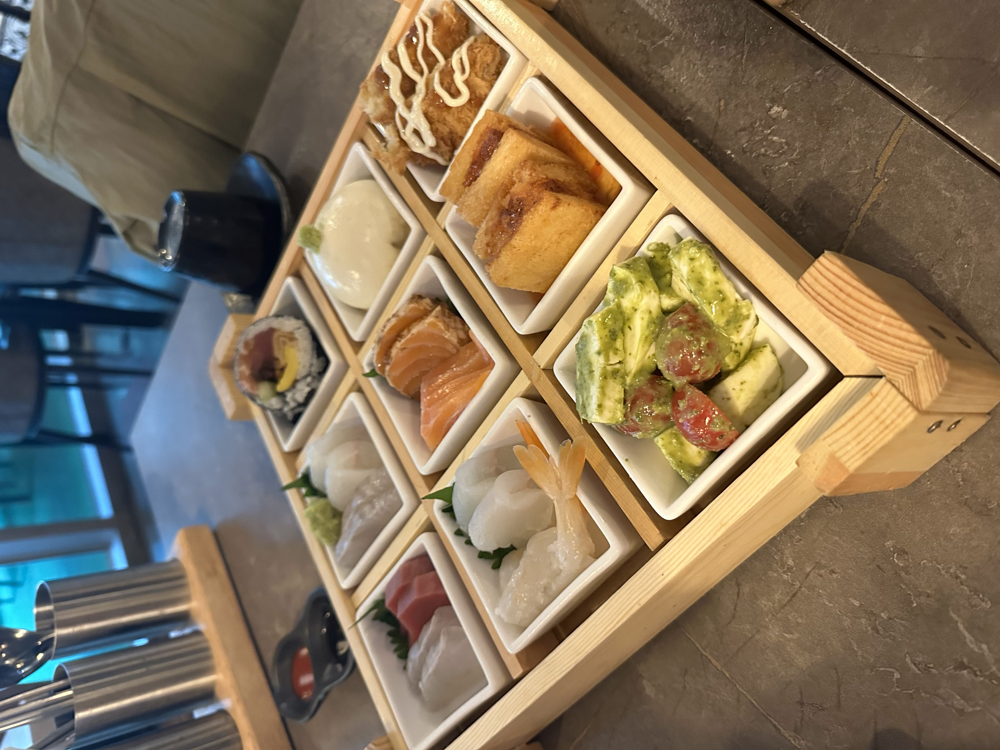
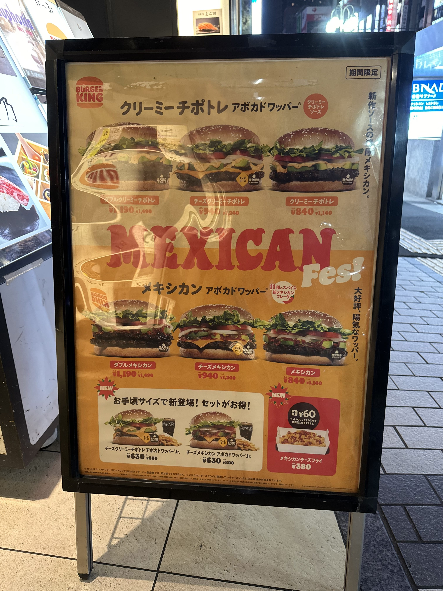
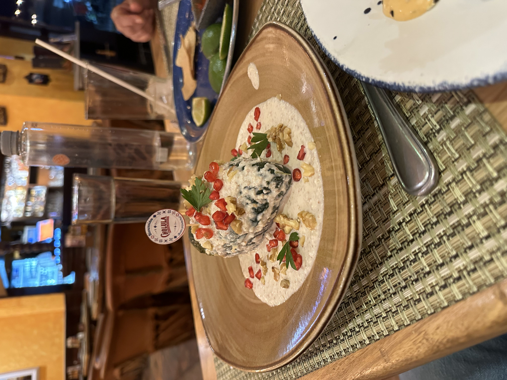
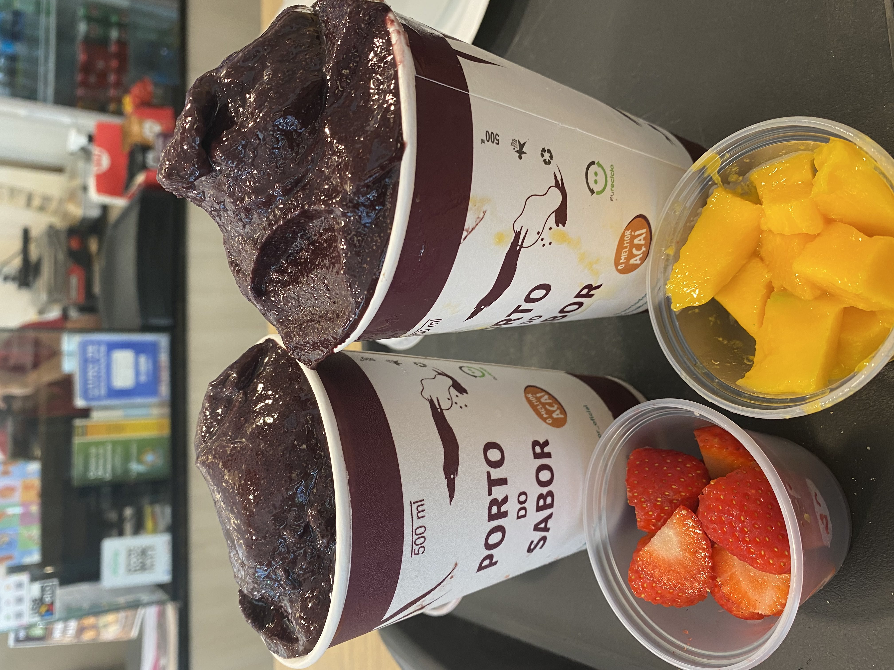
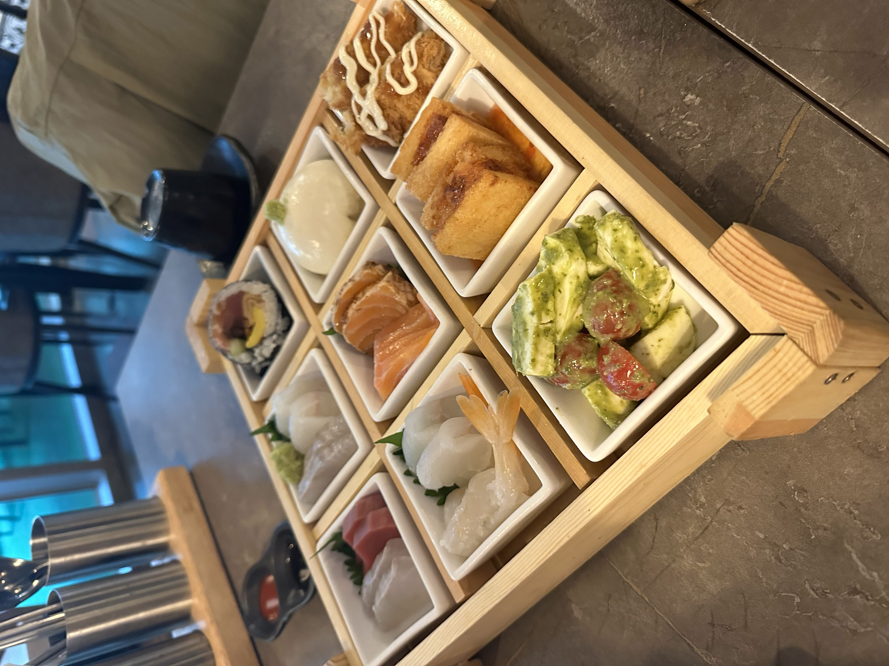
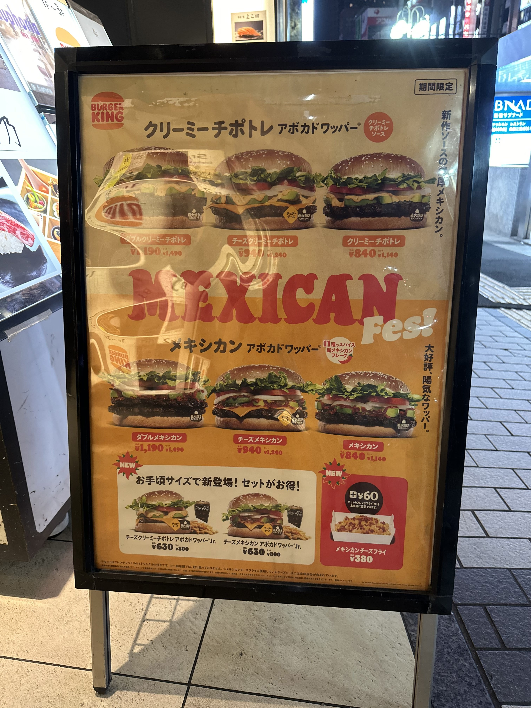
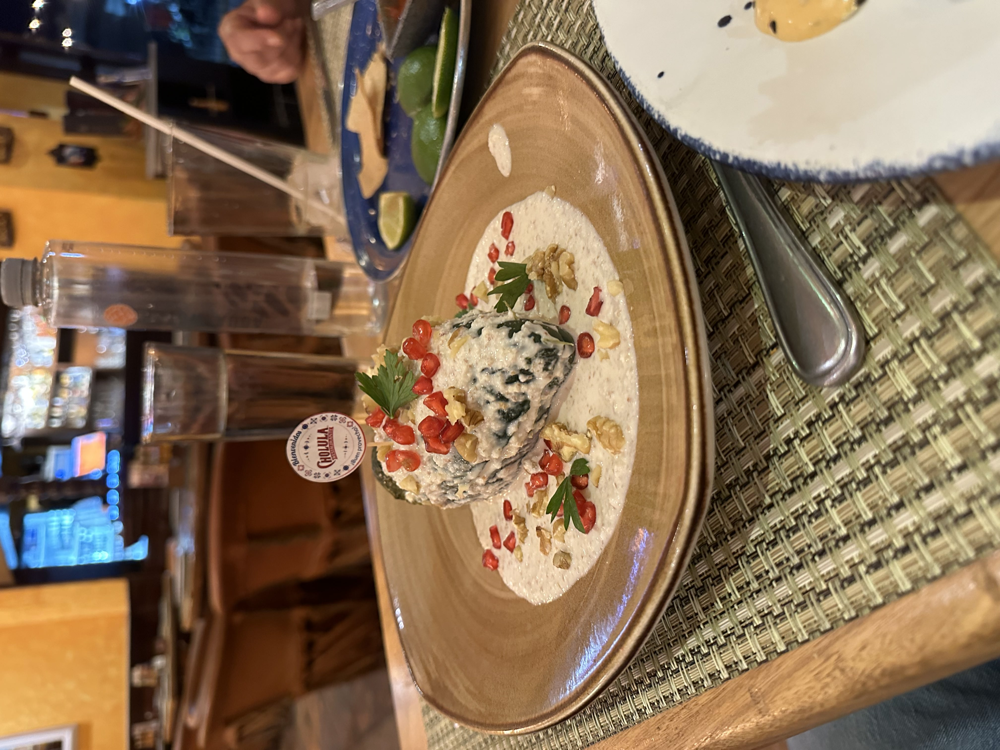
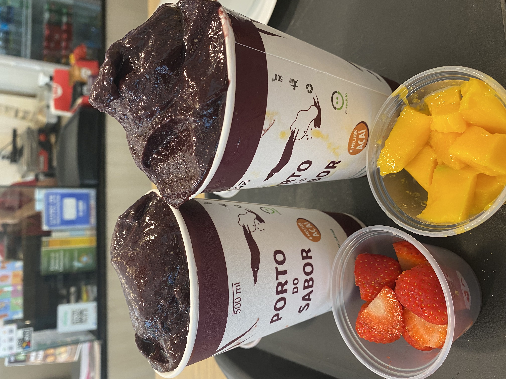
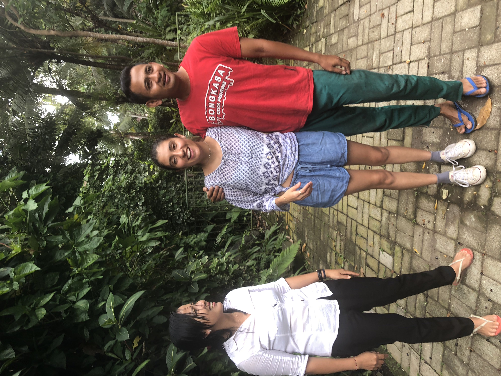
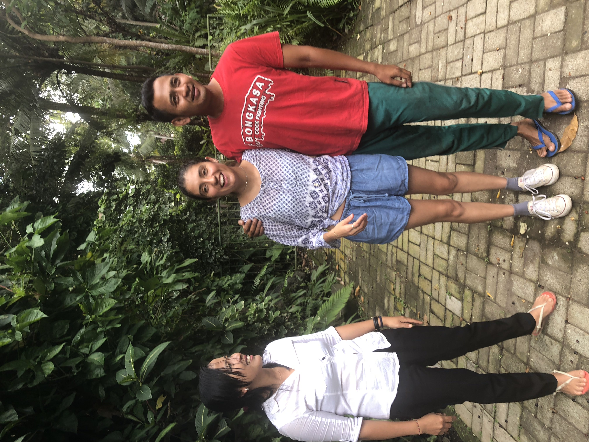

 

Global Fusion Food Culture
Fusion Food Culture is the subject of my Cultural Anthropology master’s thesis. The idea first took shape during my gap year in Asia, between community college and Virginia Tech. While traveling, I participated in the Willing Workers on Organic Farms (WWOOF) program, exchanging my knowledge of sustainable farming for food and lodging across various islands. When I arrived in Bali, Indonesia, I encountered what felt like a language barrier that left me unable to fully communicate. Fortunately, another WWOOFer who had arrived before me helped bridge those gaps. What I will never forget, however, are the meals that bonded us. Those shared meals became formative moments. They were spaces of connection, comfort, and cultural exchange, where language was not always necessary. These experiences laid the foundation for what would eventually become both my academic research and this visual project.
I began formal research on fusion food two years ago, and have since expanded the project into a broader investigation of history, identity, and culinary authorship. For this photo essay, I have curated twelve original photographs taken between 2018 and 2025. While some are clear examples of fusion cuisine, others serve as supporting images, capturing examples of national dishes and people I met along the way. For instance, the second and final images include individuals with whom I formed meaningful connections that transcended language barriers. Another, more recent example, is in image ten, of a book where I conducted an ethnographic interview on Mrs.Dunton's unconventional recipe book. Overall, my images are not merely aesthetic; they document moments that challenged my assumptions about cultural ownership.
This project is not site-specific, as it surveys cultural attitudes, historical contexts, and emerging conversations across global culinary landscapes. Given the lack of scholarly work focused specifically on fusion cuisine, my audience is broad. While I approach the topic through an academic and critical lens, the work is accessible to anyone with an interest in food, identity, or cultural exchange.
The central narrative I aim to explore is that fusion food belongs in a space of reinterpretation—where personal takes on traditional dishes can exist, and even thrive, outside of rigid cultural expectations. This series leaves me with lingering questions that guide my research: